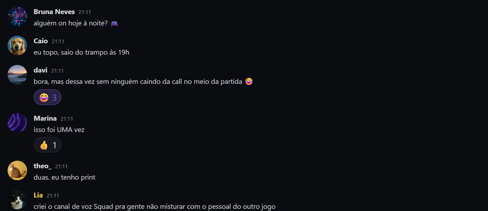
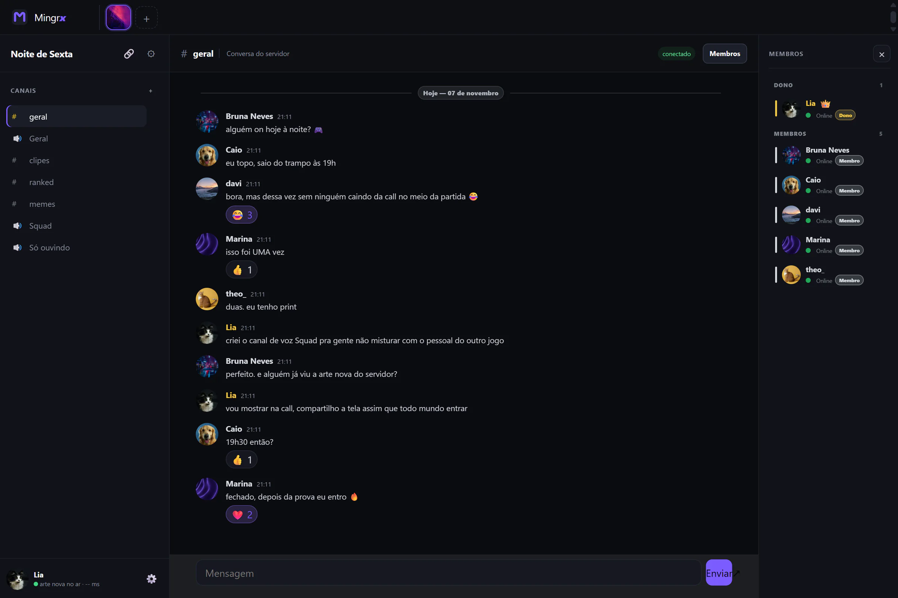
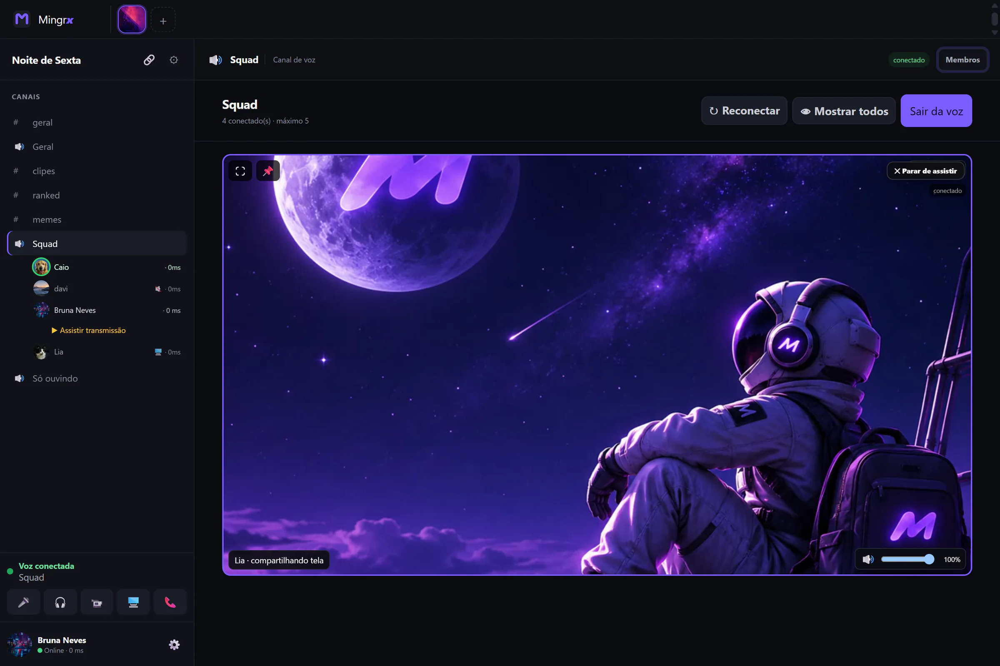
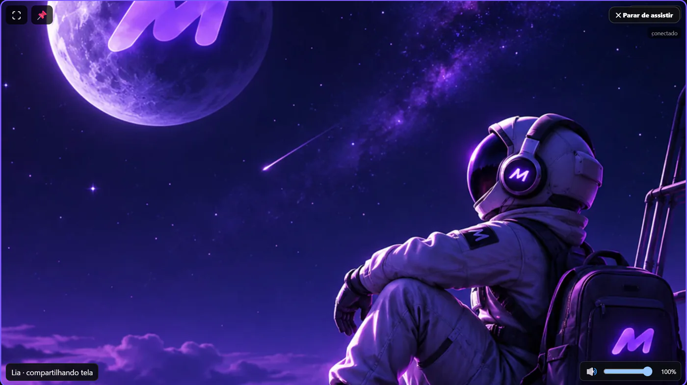

Mensagens que continuam.
Uma conversa no privado. Um canal para o grupo. Organize o que vocês querem conversar sem perder o fio do assunto.

Explore as conversasSEU GRUPO, MAIS PERTO
Mensagens, chamadas de voz, compartilhamento de tela e comunidades em um só lugar.

Gratuito para Windows 10 e 11.
Instalador oficial pelo GitHub.
Copie este endereço: https://mingrx.site/
Conheça o Mingrx por dentro.
Capturas reais, no seu ritmo.

Uma conversa, uma chamada, um lugar para o grupo.
Entre na chamada, ative a câmera quando quiser e fique por perto.

Mostre uma tela ou janela durante a chamada. Vale acompanhar uma partida ou explicar uma ideia.
Conheça o recursoSepare assuntos em canais de texto e reúna o grupo nas salas de voz.
Veja a comunidadePersonalize seu status no perfil. Adicione seus amigos e volte às conversas pela lista de recentes.
Encontre seu grupoImagens do aplicativo real, com contas e conversas de demonstração.
Do primeiro oi à chamada.
Veja como tudo se conecta no Mingrx.
O Mingrx é gratuito. As conversas acontecem no aplicativo para Windows 10 e 11.
Instale o aplicativo oficial pelo GitHub do projeto.
Baixar para WindowsCrie sua conta no aplicativo e confirme o endereço para entrar.
Adicione um amigo pelo nome ou abra um convite para entrar em uma comunidade.
O Mingrx é gratuito. Baixe o instalador oficial e encontre seu grupo no aplicativo.
Ajuda com a instalaçãoGratuito para Windows 10 e 11.
O aplicativo atual não tem versão para celular ou navegador.
Novas mensagens privadas entre versões compatíveis usam criptografia ponta a ponta. Mensagens antigas e de canais de comunidades não têm necessariamente essa mesma proteção.
A política explica o alcance da proteção, os dados usados pelo serviço e como pedir sua exclusão.
Entenda a privacidadeSim. A versão atual do aplicativo para Windows pode ser baixada gratuitamente.
O aplicativo atual é para Windows 10 e 11. No celular, você pode conhecer o Mingrx e copiar o link do site para abrir no computador.
Abra um link de convite do mingrx.site. A página tenta abrir o aplicativo. Depois de instalar, abra o mesmo convite novamente para continuar.
O aplicativo oficial verifica novas versões e pode adiar a instalação enquanto você está em chamada ou editando uma mensagem. Também é possível conferir pelo menu do ícone do Mingrx perto do relógio do Windows.
Essa proteção se aplica às novas mensagens privadas entre clientes compatíveis. Mensagens antigas e de canais não têm necessariamente o mesmo formato. Veja os detalhes na política.
Gratuito para Windows 10 e 11.
Download oficial pelo GitHub.
Copie: https://mingrx.site/